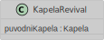
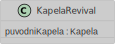
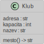
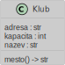

Zpracoval: David Horňák
Semestrální projekt o struktuře koncertů v objektově orientovaném pojetí. Projekt byl zpracován v jazyce Python.

 



 


kapela1 = Kapela("kessoku band", 2022, "JP", "rock", [])
clen1_1 = ClenKapely("Goto", "Hitori", date(2005, 2, 21), "kytara", kapela1)
clen1_2 = ClenKapely("Ijichi", "Nijika", date(2004, 5, 29), "bubny", kapela1)
clen1_3 = ClenKapely("Yamada", "Ryo", date(2004, 9, 18), "basa", kapela1)
clen1_4 = ClenKapely("Kita", "Ikuyo", date(2005, 9, 18), "zpěv", kapela1)
kapela2 = Kapela("Deftones", 1988, "US", "alt metal, art rock, experimental rock", [])
clen2_1 = ClenKapely("Stephen", "Carpenter", date(1970, 8, 3), "kytara", kapela2)
clen2_2 = ClenKapely("Abe", "Cunningham", date(1973, 7, 27), "bubny", kapela2)
clen2_3 = ClenKapely("Chino", "Moreno", date(1973, 6, 20), "zpěv", kapela2)
clen2_4 = ClenKapely("Frank", "Delgado", date(1970, 11, 19), "keyboard", kapela2)
kapela3 = Kapela("Kabát", 1983, "CZ", "hard rock, thrash metal", [])
clen3_1 = ClenKapely("Milan", "Špalek", date(1966, 12, 10), "basa", kapela3)
clen3_2 = ClenKapely("Tomáš", "Krulich", date(1966, 4, 19), "kytara", kapela3)
clen3_3 = ClenKapely("Radek", "Hurčík", date(1969, 1, 14), "bubny", kapela3)
clen3_4 = ClenKapely("Josef", "Vojtek", date(1965, 6, 21), "zpěv", kapela3)
clen3_5 = ClenKapely("Ota", "Váňa", date(1971, 6, 11), "kytara", kapela3)
kapela4 = Kapela("The Beatles", 1960, "UK", "rock, pop", [])
clen4_1 = ClenKapely("John", "Lennon", date(1940, 10, 9), "kytara", kapela4)
clen4_2 = ClenKapely("Paul", "McCartney", date(1942, 6, 18), "basa", kapela4)
clen4_3 = ClenKapely("George", "Harrison", date(1943, 2, 25), "kytara", kapela4)
clen4_4 = ClenKapely("Ringo", "Starr", date(1940, 7, 7), "bubny", kapela4)
kapela4_revival = KapelaRevival("The Beatles Revival", 1992, "CZ", "rock, pop", [], kapela4)
clen_revival_1 = ClenKapely("Luděk", "Maulis", date(1940, 10, 9), "kytara", kapela4_revival)
clen_revival_2 = ClenKapely("Zbyněk", "Maulis", date(1942, 6, 18), "basa", kapela4_revival)
clen_revival_3 = ClenKapely("Petr", "Lux", date(1943, 2, 25), "kytara", kapela4_revival)
clen_revival_4 = ClenKapely("Jiří", "Tomišín", date(1940, 7, 7), "bubny", kapela4_revival)
klub0 = Klub("STARRY", "G2-6-10 Kitazawa, Setagaya 155-0031, Tokyo", 250)
klub1 = Klub("Zepp Haneda", "1-1-4 Hanedakuko, Ota-ku, Tokyo", 2925)
klub2 = Klub("Lucerna Music Bar", "Vodičkova 36, Praha", 800)
klub3 = Klub("ROXY", "Dlouhá 33, Praha", 600)
klub4 = Klub("MeetFactory", "Ke Sklárně 3213/15, Smíchov, Praha", 750)
koncert0 = Koncert("-Fixed Star-", date(2024, 4, 13), time(23, 0), klub0, kapela1, 1250)
koncert1 = Koncert("-Fixed Star-", date(2024, 4, 13), time(23, 0), klub1, kapela1, 1250)
koncert2 = Koncert("Good Things", date(2024, 7, 3), time(18, 45), klub2, kapela2, 2350)
koncert3 = Koncert("Po Čertech", date(2024, 11, 10), time(20, 15), klub3, kapela3, 880)
koncert4 = Koncert("Po Čertech", date(2024, 11, 11), time(19, 0), klub4, kapela3, 800)
koncert5 = Koncert("Po Čertech", date(2024, 11, 12), time(18, 45), klub2, kapela3, 900)
koncert6 = Koncert("The Beatles Revival Tour", date(2024, 2, 28), time(15, 30), klub4, kapela4_revival, 300)
kapely = [kapela1, kapela2, kapela3, kapela4, kapela4_revival]
clenoveKapel = [clen1_1, clen1_2, clen1_3, clen1_4]
clenoveKapel += [clen2_1, clen2_2, clen2_3, clen2_4,]
clenoveKapel += [clen3_1, clen3_2, clen3_3, clen3_4, clen3_5]
clenoveKapel += [clen_revival_1, clen_revival_2, clen_revival_3, clen_revival_4]
kluby = [klub0, klub1, klub2, klub3, klub4]
koncerty = [koncert0, koncert1, koncert2, koncert3, koncert4, koncert5, koncert6]